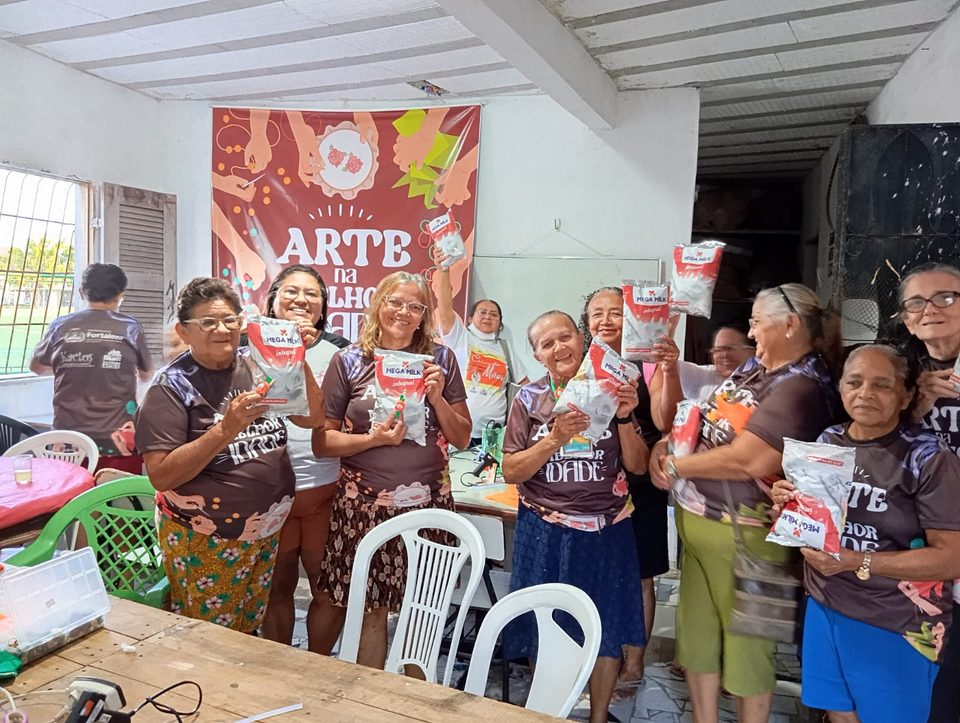

Cultura
Desde 2011
Ballet Pontinha dos Pés
Ensina balé clássico gratuito a meninas que não têm condições de pagar por uma escola de dança. Hoje são cerca de 50 bailarinas, de 3 a 70 anos.
O Instituto ACRE é uma entidade civil sem fins lucrativos que leva arte, cultura, esporte e assistência social a crianças, jovens, adultos e idosos do Conjunto Esperança e região desde 27 de junho de 1983.


O Instituto de Arte, Cultura e Recreação do Conjunto Esperança — ACRE — é uma entidade civil, de direito privado e sem fins lucrativos, fundada em 27 de junho de 1983. Iniciou suas atividades cuidando da coletividade das pessoas que moram no Bairro Conjunto Esperança e, hoje, atende também pessoas de outros bairros de Fortaleza.
Nossa missão é intervir de forma ativa no desenvolvimento da comunidade, respondendo às suas necessidades através da prestação de serviços sociais, educacionais, culturais e desportivos a crianças, jovens, famílias, adultos e idosos.
Nossa história completa →Do balé clássico à segurança alimentar, da terceira idade às tradições juninas: conheça algumas das frentes de trabalho do Instituto ACRE.
Ensina balé clássico gratuito a meninas que não têm condições de pagar por uma escola de dança. Hoje são cerca de 50 bailarinas, de 3 a 70 anos.

Entrega 100 marmitas (quentinhas) de segunda a sexta-feira, garantindo uma refeição digna para famílias da comunidade.

Começou com 7 mulheres e hoje reúne cerca de 20 integrantes da comunidade em atividades de convivência, artesanato e bem-estar.
Intervir de forma ativa no desenvolvimento da comunidade, respondendo às suas necessidades através de serviços sociais, educacionais, culturais e desportivos.
Ser uma instituição de referência e confiança na comunidade, reconhecida pela experiência e elevada qualidade dos serviços prestados.
Solidariedade, igualdade e cidadania guiam cada ação do Instituto ACRE junto aos utentes, colaboradores e à comunidade.
Doações, parcerias e trabalho voluntário ajudam a manter viva a arte, a cultura e a assistência social no Conjunto Esperança. Fale com a gente e descubra como colaborar.